Este tipo de pensamiento surge de la suposiciÓn de que si algo en ciertas circunstancias es cierto lo sera en situaciones semejantes aunque no se haya comprobado (ejemplo ) casualidad y la predicciÓn.
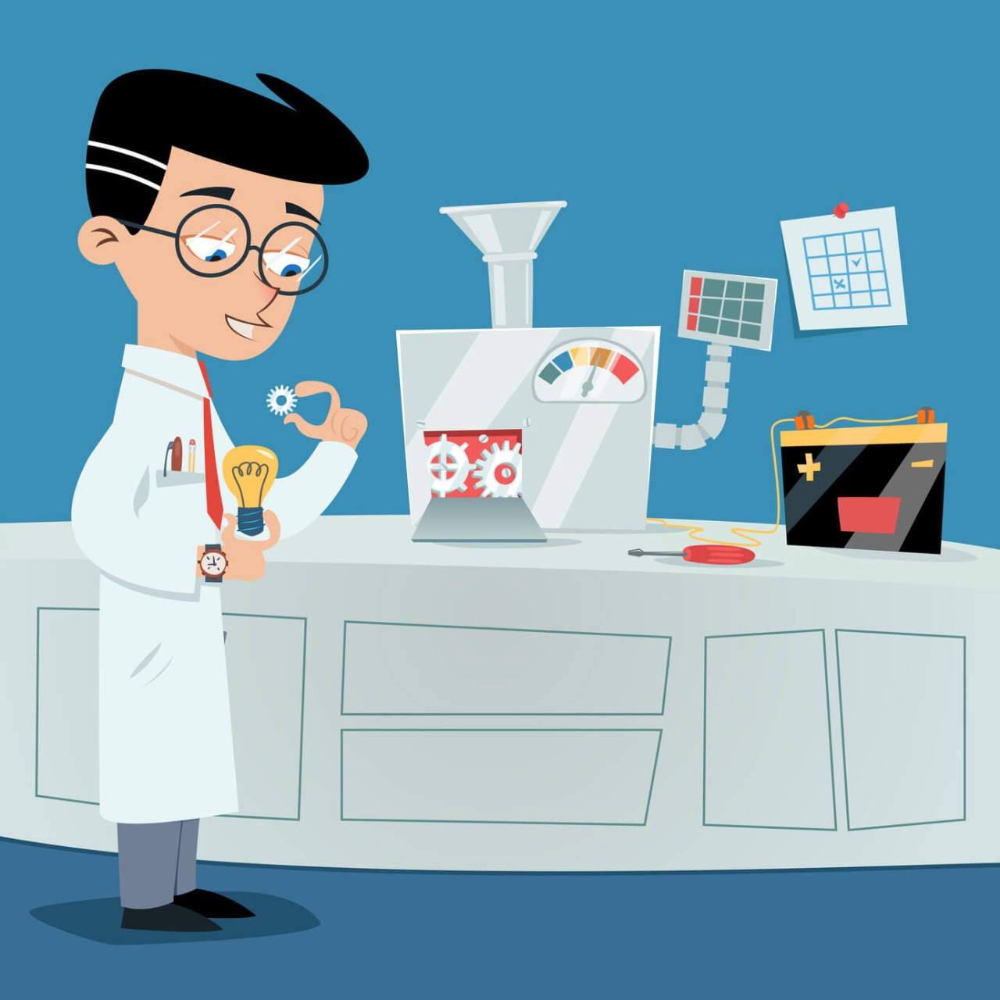Este llega a afirmaciones sobre casos particulares partiendo de categorÍa generales de esta manera se infiere una conclusión a partir de una o más premisas.
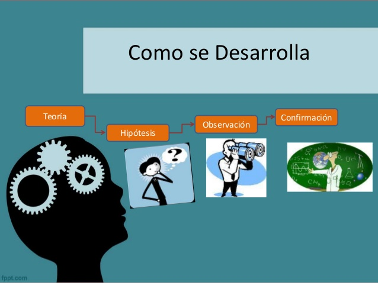En este se llega a comprender una situación particular mediente la divición de la misma en fragmentos de esta manera lo que se hace es comparar distintas características de la situaciones establece relaciones causales o condicionales entre ellas o identificar secuencias temporales.
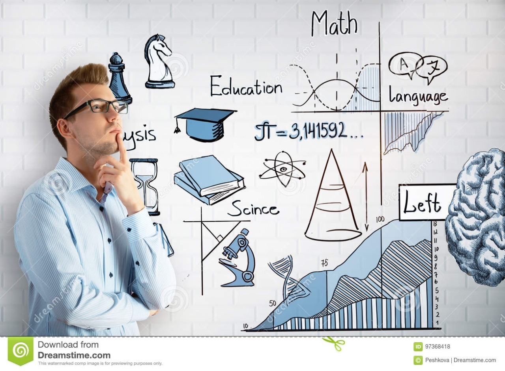Este pensamiento lo que se producen son las respuestas u opciones posibles frente a un reto o pregunta abierta.
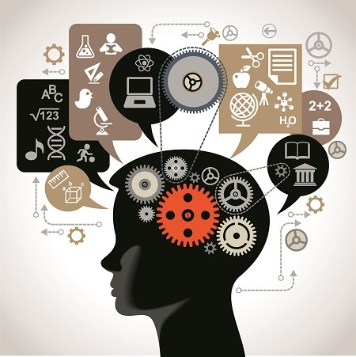Este pensamiento elige entre diversas opciones para llegar a una conclusión.
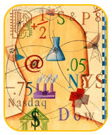Este pensamiento es difuso, aproximado, metafórico y hasta puede llegar a ser contradictorio.
A diferencia del pensamiento suave, en este concepto son concretos, coherentes,logicos, precisos y libres de antiguedad.
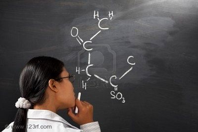Esta palabra alude al uso óptimo de los hemisferios izquierdo y derecho del cerebro que se caracteriza por su divergencia y globalidad y creatividad se obtienen mejor resultado en la vida cotidiana y los negocios.
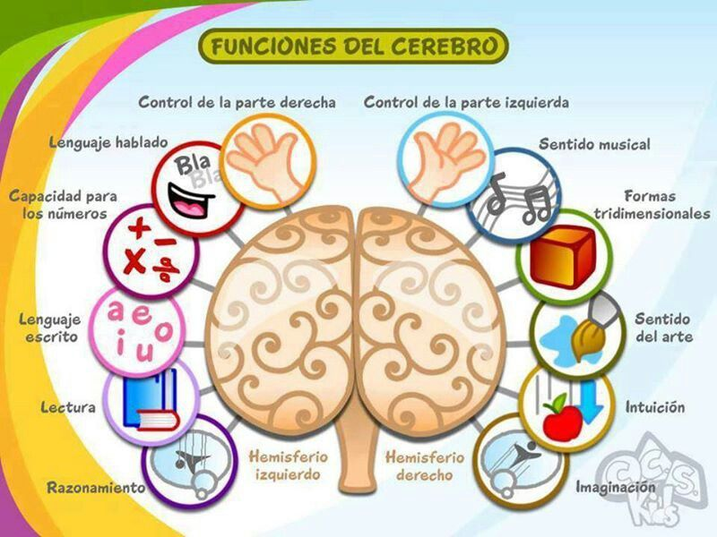El pensamiento vertical o lógico se caracteriza por el análisis y el razonamiento nos ayuda a desarrollar nuestras lógica mediante el análisis deductivo y la disciplina del razonamiento.

Selectivo
Se mueve si hay una direccion
Analítico
Secuencial en las ideas
Se usa la negacion pra bloquear lo lateral
Cada paso es correcto.
Creador
Se mueve para crear nuevas direcciones
Provocatico
Ideas de salto
No se rechaza ningùn camino
No es preciso que lo sea.
Permite regular la impulsividad, estimula a las personas para que reflexionen antes de actuar o de tomar una decisión y ayuda a retardar los juicios y a ampliar la visión que se tiene acerca de situaciones o problemas.
Son características con valores cualitativos y cuantitativos que deben ser consideradas antes de tomar una decisión para el cumplimiento de nuestro propósito y logro de metas.
Nos permite identificar posibles explicaciones de un hecho o situación y nos ayuda a encontrar posibles cursos de acción o posibles opciones al hacer una selección.
Posibles soluciones
Explicaciones
Cursos de acción.
Cualquier hecho , suceso o acción genera consecuencias que no debemos ignorar , en muchos casos retienen o alerta de lo que puede suceder en el futuro , para bien o para mal.
El proceso de considerar otros puntos de vista nos invita a tomar en cuenta la opinión y el sentir de los demás y a pensar que no estámos solos, que lo que hacemos de alguna manera afecta a otra persona.
Las reglas son necesarias para vivir en sociedad. en muchas ocaciones se requiere aplicarlas para facilitar el trabajo en grupo, para convivir con otras personas, para organizar las actividad cotidiana y de estudio.
Definimos objetivos antes de actuar, cuando queremos lograr algo. si conocemos nuestros objetivos sabemos dónde queremos llegar y como dirigir nuestras acciones para alcanzar lo que necesitamos.
Alconsiderar prioridades se toma en cuenta las ideas más importantes. para seleccionar lo mas importante se requiere saber la razón que nos lleba a esa elección y no a otra, esto se refiere atener un criterio de selección de prioridades .
Es la base del desarrollo de la habilidad de una persona para definir sus propias estrategias o maneras organizadas de llevar a cabo las acciones que se plantean ,de verificar sus logros y introducir los corectores que sean necesario.
Procesos que consiste en seleccionar una entre varias alternativas deseables y posibles.
Este es la operación de pensamiento que permite identificar características de un objeto, hecho o situación.
El resultado de la observación se puede expresar en forma precisa y ordenada a través del lenguaje verbal o escrito, permitiendo enumerar e integrar las características observadas,
Es el proceso que consiste en identificar las características semejantes y diferentes, de dos o más objetos o situaciones.
La relación es el proceso que permite establecer nexos entre pares de características correspondientes a una misma variable a partir de su comparación.
La Clasificación es el proceso mediante el cual podemos separar los elementos de un conjunto en subconjuntos, de forma tal que todos los elementos de un subconjunto comparten una característica correspondiente a una variable previamente seleccionada, y cada subconjunto difiere de los demás en la característica que comparte de esa misma variable.
Permite separar grupos de elementos con base en sus características esenciales.
Una secuencia es una sucesión de estados, símbolos o características relacionadas con un objeto, situación o suceso que cambia en función de una o más variables.
Es la secuencia que experimentan los objetos, sucesos y procesos como resultado de los cambios que sufren. Un orden es entonces la organización de los elementos de un conjunto, de acuerdo con sus características asociadas a una variable, en una secuencia progresiva.
La clasificación jerárquica es el proceso que nos permite separar los elementos de un conjunto en clases y subclases de acuerdo a dos o más criterios de clasificación simultáneamente.
Es un proceso u operación de pensamiento que implica la descomposición o división de objetos, situaciones o ideas en las partes que lo constituyen. Esta división es un proceso sistemático y organizado que facilita la comprensión del mundo que nos rodea.
Es el proceso mediante el cual se integran las partes, las propiedades y las relaciones de un conjunto delimitado para formar un todo significativo.
El proceso mediante el cual una persona juzga o emite un juicio de valor acerca de un objeto, hecho o situación, se denomina evaluación.

Es una reinterpretación significava y persona de los síbolos verbales impresos que se justifica solo en la medida en la que el lector es capaz de comprenderlos significados que estan asu disposición
Esindispensable tener las condisiones ambientales pertinentes buena luz , silla ,cómoda postura correcta
Más allá de que nuestros soportes de lectura sean físicos o digitales hay aspectos de mayor relevancia en la experiencia lectora, entre los que encontramos lo que nos motiva a iniciarla y el tipo de texto que tenemos al frente.
o en voz alta, es la que se practica cuando se articula el texto en voz alta, sonoramente. Su objetivo puede ser que otras personas escuchen el contenido del texto.
consiste en recibir mentalmente el mensaje escrito sin pronunciar palabras, siguiendo con la mirada las líneas del texto en silencio. Es el tipo de lectura más frecuente y su uso es personal.
Este tipo de lectura consiste en leer de forma rápida para saber de qué trata un texto. La finalidad de este tipo de lectura es captar la idea general de los contenidos fundamentales del texto, sin entrar en los detalles. Por ejemplo, se utiliza la lectura superficial cuando se comienza a estudiar un tema por primera vez y el objetivo es hacerse a una idea
Esta lectura permite buscar datos o aspectos muy específicos de interés para el lector, obviando el resto.
Es el tipo de lectura que realiza el lector que no queda tranquilo hasta estar seguro de haber entendido perfectamente todo el mensaje.
A diferencia de la lectura comprensiva, en este tipo de lectura mientras se lee, se produce una lluvia de ideas con riqueza de contenido que el lector va generando, organizando y relacionando.
La lectura crítica es la que se realiza cuando se analiza y evalúa la relevancia de lo que se lee lo que implica reconocer la verdad aparente del contenido del texto e identificar lo que posiblemente se oculta.
La lectura recreativa es la usada cuando se lee un libro por placer. Se suele realizar a la velocidad que defina el lector y su propósito principal es entretenerse y dejar volar la imaginación.


Se comprenden cinco temas en especificos que permiten darles connotaciones diferentes a las palabras según sea el caso estos temas son:
Se requiere de manejar el significado de las palabras para asi conocer su relación.
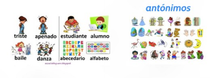Se requiere de manejar la relación que hay entre dos o más palabras.

Se requiere de entender las escruturas de las mismas.
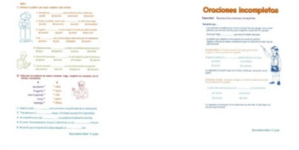Se requiere de asimilar los sentidos de uso la palabra según el contexto.
Este razonamiento no solamente permite el enriquecimiento del vocabulario sino que ademas permite el buen uso y adaptación de las palabras en un contexto dado.
Existen estrategias que ayudan a comprender o interpretar un texto o parrfo cuando leemos y/o utilizamos razonamiento verbal
La búsqueda de información se establece en una serie de pasos precisos para obtener con la mayor rapidez, exhaustividad y pertinencia posible la información deseada. Es lo que se conoce como estrategia de búsqueda: Definir o resumir en una o varias frases cortas el tema sobre el que se desea obtener información. • Buscar los conceptos clave que definan esas frases cortas, y expresarlos del mayor número de formas posibles empleando sinónimos, variantes gramaticales, etc. Y buscar su traducción al inglés si se van a utilizar recursos en este idioma. • Traducir los conceptos clave a los términos de interrogación utilizados por el sistema en el que vamos a realizar la búsqueda. • Construir una expresión o ecuación de búsqueda utilizando los operadores booleanos, para buscar en un campo determinado (búsqueda sencilla) o bien en varios simultáneamente (búsqueda avanzada). • Evaluar y refinar los resultados obtenidos.

EXPLORACIÓN: Es el proceso por el cual se identifican alternativas, consecuencias, variables, extremos y en general organizan y analizan todos los aspectos que sean posibles, de los cuales pueden afectar una situación, un hecho o problema, antes de proceder a buscar soluciones o a definir cursos de acción. La exploración como proceso, nos invita a reflexionar sobre una situación o hecho antes de decidir, por lo tanto como proceso nos ayuda a controlar la impulsividad antes de solucionar o definir. ASEVERACIÓN: Es un enunciado donde se precisa o se pone en firme un vínculo o una relación entre clases.
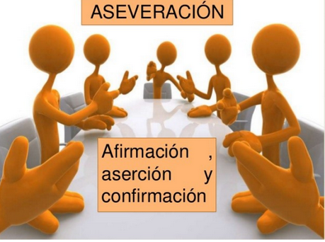Los argumentos son enunciados formados por un conjunto de ideas que sustentan un punto de vista o una posición ante un hecho o una situación. Se los utiliza para convencer a otros, ósea para tratar de que acepten un punto de vista o posición sobre un hecho o situación. Los argumentos están formados por 3 o más aseveraciones.
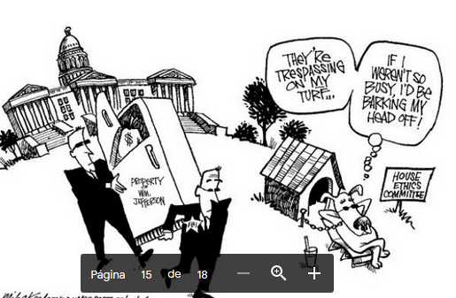 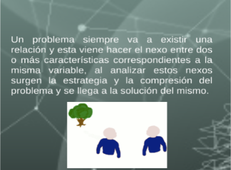
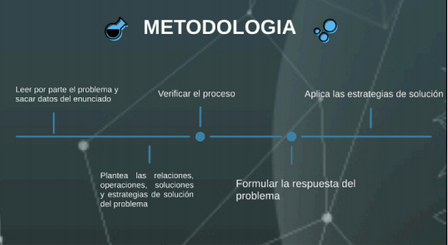
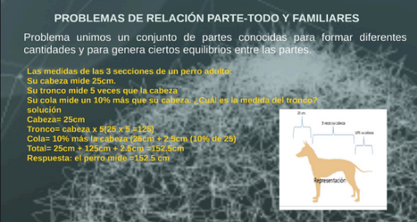
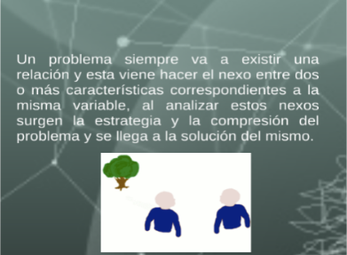
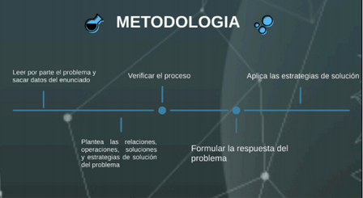
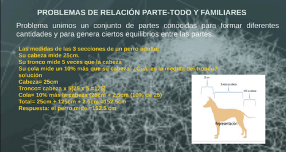
 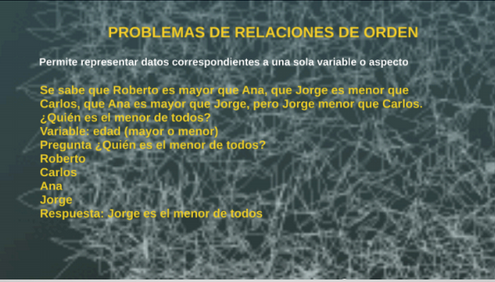
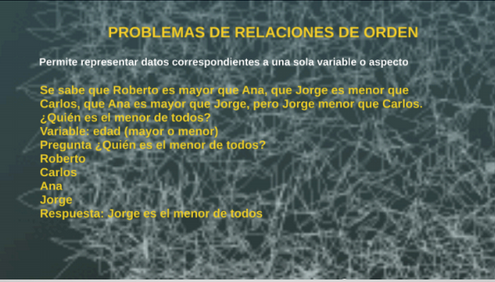
Segun la real Academia eapañola un problema es